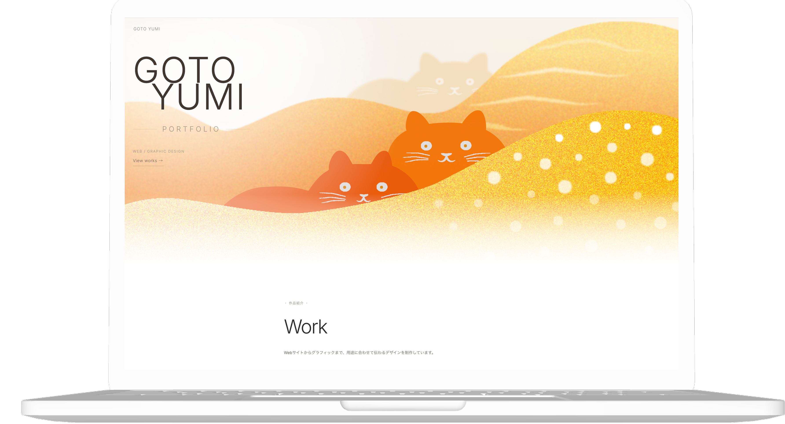

Web Design / Portfolio
WORKS
Portfolio “GOTO YUMI”
Direction / Design / Coding
制作実績と、自分らしい世界観を伝えるために制作したポートフォリオサイトです。

概要
Webデザインを中心とした制作実績をまとめるため、自身のポートフォリオサイトを制作しました。 全体のテーマは「やわらかさ」と「芯の強さ」の両立です。 見る人に安心感を与えながらも、自分らしい世界観や制作に対する姿勢が伝わるサイトを目指しました。
目的
制作物を掲載するだけでなく、デザインの意図や思考過程まで伝えることで、 自分の価値観や強みがより明確に伝わるポートフォリオを目指しました。
ターゲット
採用担当者やクライアントを想定し、デザインスキルだけでなく、 世界観づくりや情報設計、細部へのこだわりが伝わる構成を意識しました。
課題
複数ジャンルの作品を掲載する中で、情報が整理されていないと閲覧しづらくなる点が課題でした。 そのためカテゴリごとに整理し、余白を活かしたシンプルなレイアウトにすることで、 直感的に作品を理解できる構成にしました。
デザイン
メインビジュアルには猫と山をモチーフとして使用しています。 猫は自分にとって生活に欠かせない存在であり、心を落ち着かせてくれる安心感の象徴です。 デザインを通して、人の心に寄り添えるような表現をしたいという想いを込めています。
山は信念や強さ、一貫性といった自分自身の軸を表現しています。 硬くなりすぎないよう柔らかい色合いと形で構成し、 やさしさと芯の強さの両方を感じられるデザインを目指しました。
制作範囲
使用ツール
Figma / photoshop / illustrater / vscode
Yumi Goto